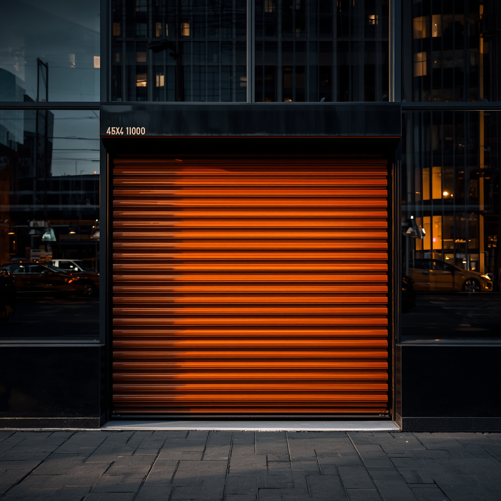
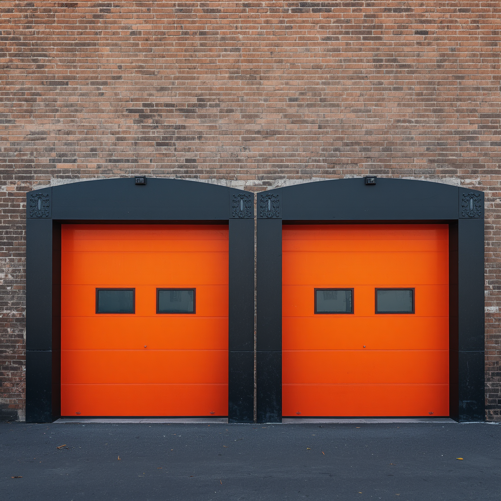
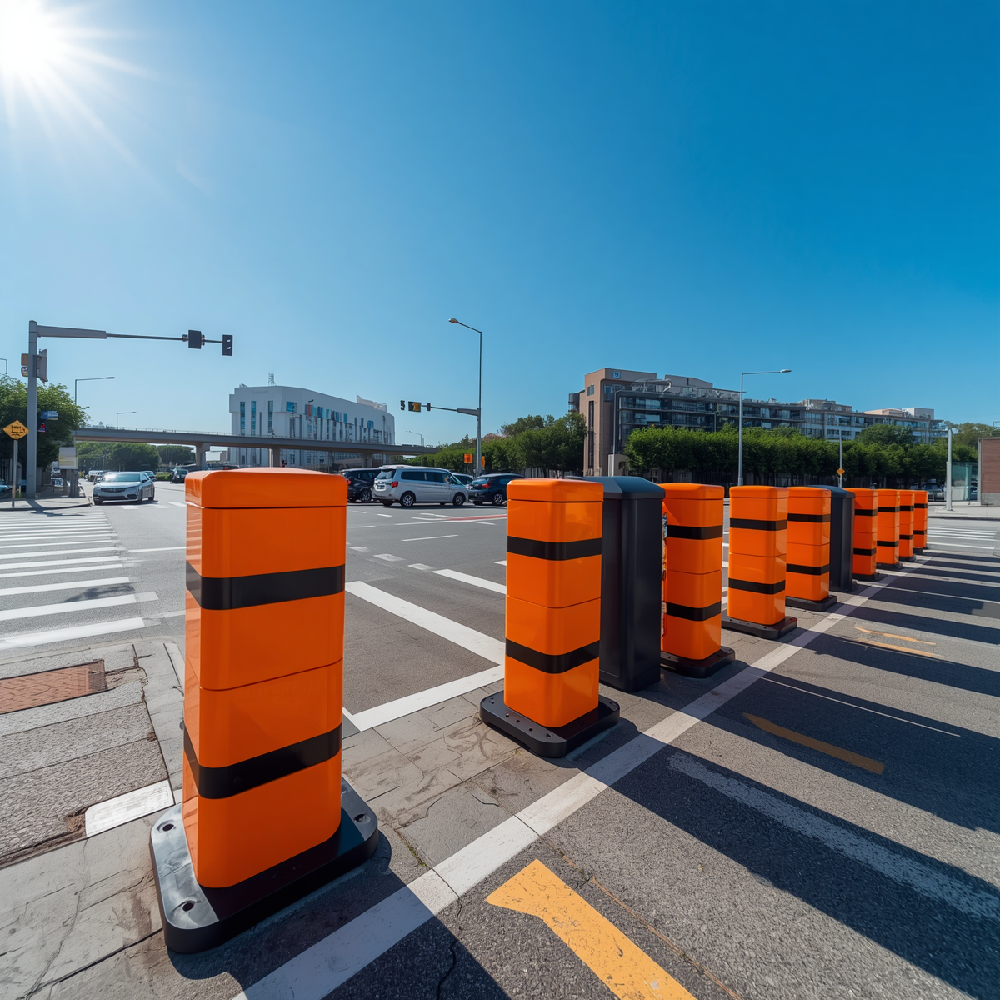
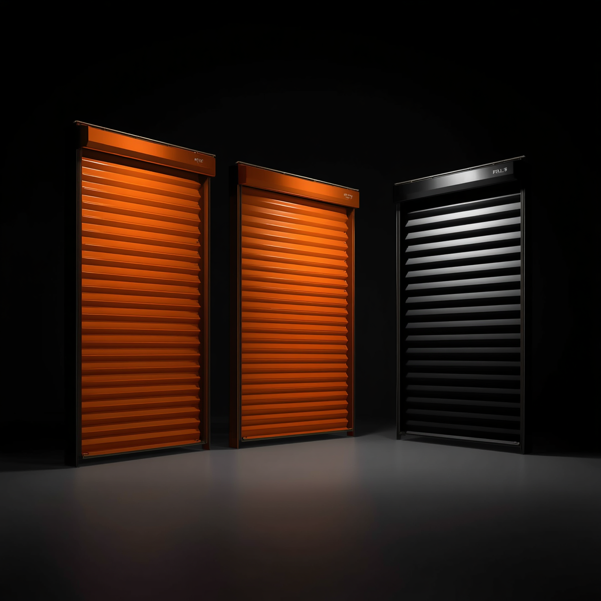
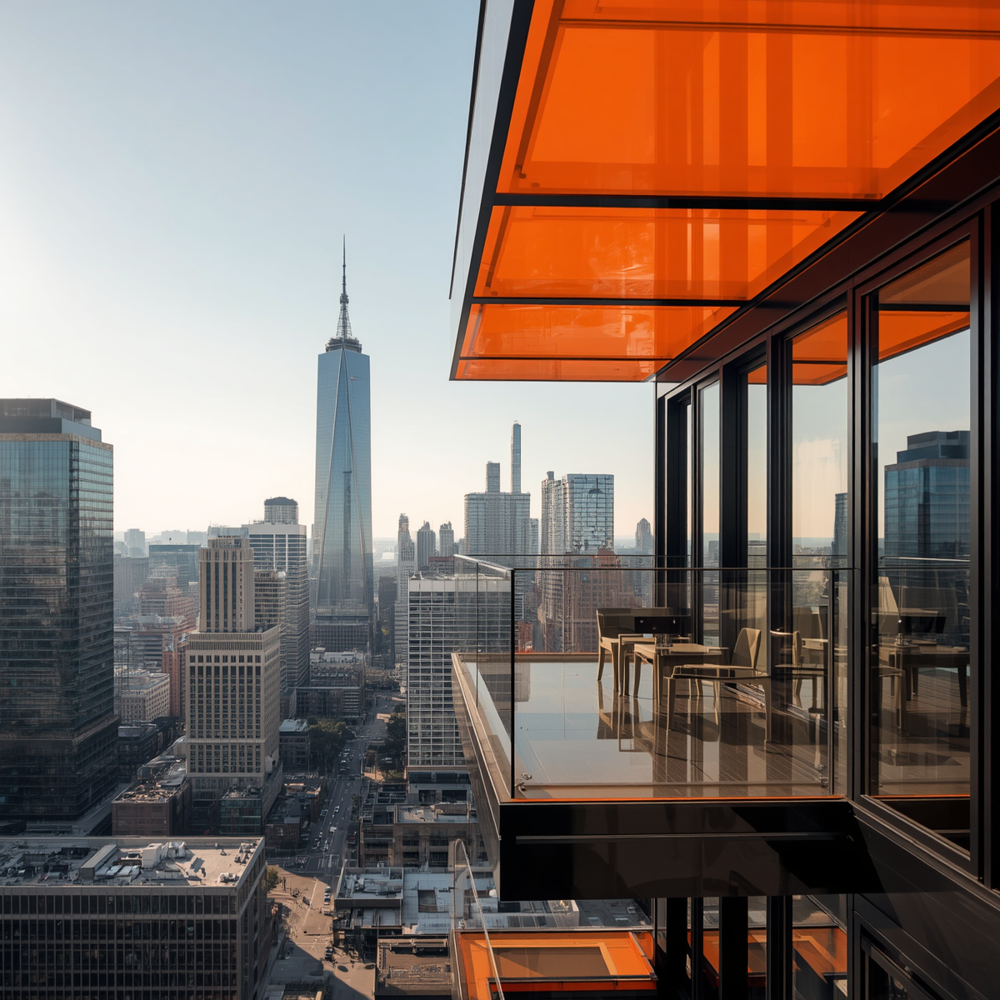
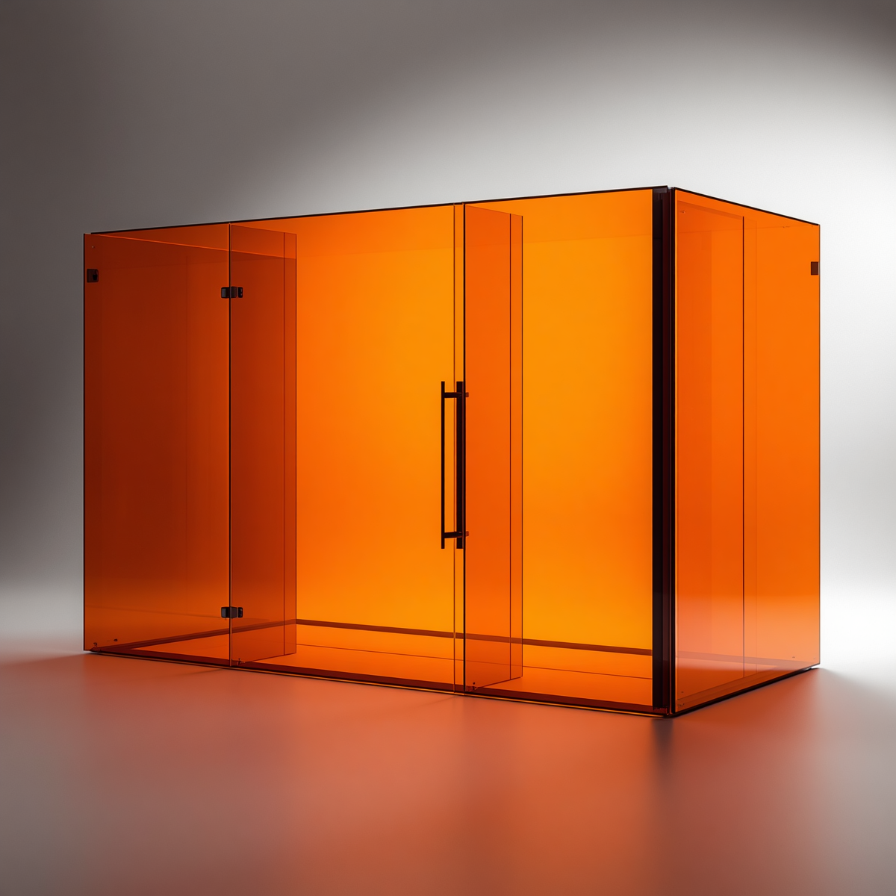

Otomatik Kepenk Sistemleri
Mağaza ve iş yerleri için alüminyum veya çelik kepenk çözümleri.
Ürün detaylarını gör 01 / 06Konutlardan ticari yapılara, giriş ve cam sistemlerinde işlevi tasarımla buluşturan uygulamalar.

Mağaza ve iş yerleri için alüminyum veya çelik kepenk çözümleri.
Ürün detaylarını gör 01 / 06
Seksiyonel ve motorlu kapılarla alanınıza uygun güvenli geçiş.
Ürün detaylarını gör 02 / 06
Otopark ve tesis girişlerinde kontrollü araç geçiş sistemleri.
Ürün detaylarını gör 03 / 06
Günlük kullanımda konfor ve gölgeleme sağlayan panjur uygulamaları.
Ürün detaylarını gör 04 / 06
Katlanır ve sürme cam çözümleriyle dört mevsim kullanılabilir alanlar.
Ürün detaylarını gör 05 / 06
Dikey açılır kapanır, motorlu ve kolay temizlenebilir cam sistemleri.
Ürün detaylarını gör 06 / 06